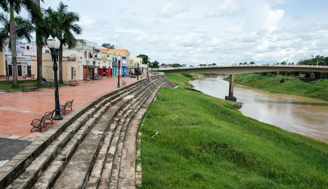

O Acre está situado no sudoeste da região Norte e tem como limites os estados do Amazonas e Rondônia e os países Bolívia e Peru. O nome Acre surgiu de “Aquiri”, que significa “rio dos jacarés” na língua nativa dos índios Apurinãs, os habitantes originais da região, que é banhada pelo rio que empresta o nome ao estado.
